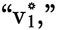

Круглая Радуга
3.
В Зоне
– Где корабль?– Хафтунг в белой панике. Утки всполошились, перекрякиваются вокруг. Ветер шевелит траву. Когда лучи прожекторов скользят мимо, стволы сосен наверху вспыхивают, глубоко озарённые, жуткие… а за спиной у каждого Балтика колышется, разливается.
Выстрелы наверху—потом, должно быть в ответ от Нэриша, автоматная очередь. Отто прижимает Хильду к себе. –«Кто-нибудь читает Азбуку Морзе?»– интересуется девушка в руках Слотропа,– «потому что там огонёк, видите, с краю того островка? уже минуты две».– Это три точки, точка, точка, и ещё три точки.
– Хмм, СЕЕС,– предполагает Феликс.
– Может они не точки,– грит тенор-саксофонист,– может они тире.
– Смешно,– грит Отто,– тогда получается ОТТО.
– Так тебя зовут,– грит Хильда.
– Мать!– вскрикивает Отто забежав в воду и махая руками мигающему огоньку. Феликс начинает мукать тубой над водой, остальной оркестр подключается. Тени камыша вонзаются в песок, под проносящимся светом прожекторов. Становится слышным рёв моторов судна. –«Она сюда подходит!»– Отто скачет вверх-вниз по топи.
– Эй, Нэриш,– Слотроп щурится пытаясь разглядеть того в свете, который давно уж слишком слаб,– давай сюда. Отходим.– Нет ответа. Но стрельба усиливается.
С потушенными огнями, судно приближается на максимальной скорости, Фрау Граб решила протаранить Пенемюнде? нет, теперь она даёт полный назад, визг подшипников, гейзеры пены от винтов, судно разворачивается затормозив до стопа.
– Всем на борт,– рявкает она.
Слотроп кричит и кричит призывы Нэришу. Фрау Гнаб даёт свой гудок. Но нет ответа. –«Блядь, я должен забрать его—»– Феликс и Отто ухватывают Слотропа сзади, оттаскивают его к судну, он клянёт их, брыкаясь: «Они его убьют, вы суки, пустите меня—» Тёмные фигуры переваливают через дюну, рассыпаются отрезав от Испытательной Установки VII, оранжевые вспышки на уровне их средних секций, ружейная пальба долетает секундой позже.
– Они убьют нас.– Отто заталкивает Слотропа через борт, сам переваливается следом. Прожектора нашли и скрестились на них. Огонь усиливается—взбрызги и взбульки от воды, пули стучат о борт.
– Все тут?– клыки Фрау обнажились в ухмылке.– Отлично!– Подбегает последняя обезьяна, Хафтунг хватает животное за руку и оно волочится, ногами в воде, несколько метров, пока они отходят, полный вперёд, прежде, чем окончательно вскарабкаться на борт. Стрельба продолжает преследовать в море, не достигая корабля, а под конец и слуха.
– Слышь, Феликс,– грит саксофонист,– как думаешь, может подвернуться халтура в Свинемюнде?
Джон Дилинджер, в конце, обрёл пару секунд странной благостыни от кадров фильма, которые не совсем ещё стёрлись в его глазных яблоках—Кларк Гейбл уходит, нераскаянный, поджариться на стуле, голоса дружески из-за железа камер в очереди смертников, пока, Блэки… отвергнув отсрочку подписанную другом всей его жизни, который нынче Губернатор штата Нью-Йорк Вильям Повел, тощий снисходительный задрот без подбородка, а Гейбл просто хочет покончить с этим всем: «Умри как живёшь—сразу, не затягивая—», даже когда сучонок Мелвин Пёрвис, шестёрка на стрёме возле Кинотеатра Биограф, зажёг свою роковую сигару, чувствуя уже между своих губ член официального поощрения, а трусливые федералы по этому сигналу навели на Дилинджера свои пидарастические прицелы… у обречённого всё ещё длился некий сдвиг личности—как в точности чувствуешь чуть погодя в реале, по мускулам своего лица и голосу, что ты таки Гейбл, гордая, блестящая, змеиная голова—пособить Дилинджеру продраться сквозь кусты, и чуть полегче в смерть.
Нэриш сейчас собрался в комок внутри двух метров разбитой дренажной трубы из бетона, после перебежки под стеной Испытательной Установки VII, залёг по новой, в запахах застоялой штормовой воды, старается не дышать громко, чтоб не всхрапнуло предательское эхо—Нэриш не был в кино аж с Der Müde Tod. Так давно это было, что он забыл как кончается, тот заключительный элегически Рилькевский кадр усталой Смерти, ведущей двух влюблённых рука об руку через незабудки. Эти ничем не смогут помочь. С Нэришом в эту ночь только последний автомат в его карьере, чужой и перегревшийся... и ожоги на руках, которые завтра его не будут беспокоить. Ни малейших источников благостыни в пределах досягаемости, кроме твёрдого оружия и обожжённых пальцев—безжалостный конец для хорошего эксперта по контролю, который всегда устанавливал чёткое время за чёткую плату…. Ему делали и другие предложения… мог бы поехать на восток с Институтом Рабе, или на запад в Америку и $6 в день—но Герхардт фон Гёль пообещал ему славу, джекпот на джекпоте, и стильную даму под руку с ним, слышь, а почему не под обе руки?—после бедного Пенемюнде по струнке, разве кто-то его осудил бы?
Даже не было необходимости знать План целиком… нельзя же так много хотеть от кого-то… правда ведь? Эта стратегия с целью добыть S-Gerät, по которой он делает всё, чтобы умереть сегодня, что ему известно о всех намерениях Шпрингера в этом деле? Нэриш видит резон в том, что он, как фигура помельче, приносится в жертву, если это позволяет Шпригеру выжить, пусть даже на один всего лишь день… образ мышления военного времени, ja, ja… но слишком поздно что-то менять….
Разве в программе S-Gerät в Нордхаузене был в своё время хоть намёк как много людей, держав, фирм, сплетений интересов нахлынут после осуществления? Конечно, тогда ему польстило, что был избран разработать модификацию в управлении, пусть даже столь незначительную… почти не требовалось особого подхода… однако, это был его первый высоко исторический момент и, как он с горечью полагал, последний, до того момента пока не встретился с вербовщиками Шпрингера, раньше, в самую дождливую пору июня…. Встречи в кафе и у входов на кладбища вокруг Брауншвайга (оштукатуренные арки, лоза роняет капли на узкие воротнички) без зонта, но с колоколящей внутри надеждой—поле полное силовых линий, раздаться, наполнить, поддержать его в полном здоровье и духе… Берлин! Кабаре Чикаго. «Вам кокаин, или колоду карт?» (реплика из старого фильма, которую шпана любила повторять в то лето)… попёрла Удача!
Но звонкое яркое предвкушенье в груди привело его сюда, вместо всего: сюда, в эту трубу, не больше как на пригоршню оставшихся минут….
Идея состояла в том, чтоб постоянно придерживаться фиксированного количества, А. Иногда ты применял диодный мост настроенный на определённую частоту, At, гудящую, тяжёлую предзнаменованием, внутри электронных коридоров… пока снаружи, в соответствии с традицией в этих делах, где-то будет собираться количество В, нарастать, по мере того как Ракета набирает скорость. И так до определённой для Brennschluss скорости,  загнанная как всякая крыса электрошоком в этот узкий лабиринт открытого пространства—да, радиосигналы с земли будут входить в тело Ракеты и, следуя рефлексу—буквально электросигналам пробегающим по рефлекторной дуге—контрольные поверхности перещёлкиваются, вернуть тебя обратно на курс в тот момент, когда ты начал отклоняться (как мог ты не сместиться, на такой высоте, в ту блистающую небрежность, покорённый ветром, чисто высотой… невообразимым пламенем у тебя под ногами)… так что для этого строго контролируемого полёта, всё держалось на острейшем, самом болезненном предчувствии, с В постоянно растущим, так ощутимо вздымающимся, как приливная волна, что обездвиживает любое незначительное создание, оттачивая воздух до холодного посвиста…. Твоё количество А—блистающее, постоянное А, унесённое, как пришлось когда-то, за тридевять земель, посреди ночи, Грааль, с тем давним по-солдафонски оголённым юмором… и однажды утром на широкой верхней губе сталисто-шерстяная седина двухдневной щетины, роковой, ужасный знак, он брился начисто ежесуточно, знаменующий, что настал Последний День—и, опять-таки, только лишь угрюмым шестым чувством, настолько же гадательно, как и чисто восприятием, что В с Множествеными Индексами уже тут, сразу за электронным горизонтом, действительно нарастает приближаясь, возможно на этот раз как «Вiw», угол прецессии гироскопа, надвигается невидимо, но ощутимо, жутко возбуждающе, по металлической раме к углу Aiw (так установлены тебе контакты: замыкаться, ты ж пойми, именно при таком угловом значении). Или же как «ВiL», другое интегрирование, не по значениям гироскопа, но по необработанным показателям самого тока, истекающего из движимой катушки между полюсами, «скованный» маятник… так представлялось это им, в Группе Разработки, условия принуждённости, запретности… отношение к своему аппаратному обеспечению было более жестоким и солдафонским, о котором большинство инженеров и посмели бы мечтать… Они и вправду воспринимались как подкованная шипами элита, Дривелинг, и Шмайл, с флуоресцентными лампами отблескивающими на его голом лбу ночь за ночью… Внутри своих мозгов они разделяли общий давний-предавний электро-декор—стеклянные переменные конденсаторы, керосин как диэлектрик, медные платы и эбонитовые крышки, Цейссовские гальванометры с тысячами болтиков мелкой резьбы для настройки, миллиамперметры от Сименса на шиферных основах, терминалы с дизайном из Римских цифр, Стандартные Омметры с марганцевой проволокой в смазке, старый Gülcher Thermosäule термо-электрический генератор, который работал от пара отопления, выдавал 4 вольта, никель и сурьма, азбестовые воронки сверху, слюдяные трубки….
Разве не была та жизнь приличнее гангстерства? Дружба чище… не такая понаверченная, во всяком случае…. Там мы видели что как сочетается… механизмы сами определяли это… всё было так ясно тогда, паранойя была лишь для врага, и никогда для своих….
– А как же SS?
– О, они были скорее врагом, я бы сказал… [Смех.]
Нет, Клаус, не расслабляйся, пожалуйста, никаких мечтаний о благосклонном Советском допросе, что закончится в какой-то горностаевой постели, в каком-то водочно-ароматном ступоре, ты знаешь это глупо….
В, В-индекс-Н-для Нэриш, почти тут—вот-вот прожгут сквозь последнюю шепчущую ширму уравниваясь с «А»—уравнять единственный кусочек себя с предоставленным ими, чтобы миновать этот миг, минимальная куколка Германского стирола, менее подлинная, чем все прежние «я»… количество, которым можно пренебречь в этом последнем свете… под эту дробь сапог охотников, и хорошо смазанных оружейных затворов….